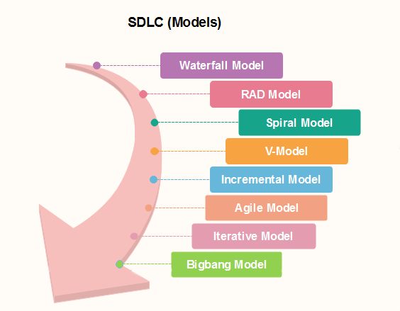

Tarkvaraarenduse elutsükkel (SDLC) on projektijuhtimises kasutatav mudel, mis määratleb etapid, mis on seotud infosüsteemi arendusprojektiga, alates algsest teostatavusuuringust kuni lõpptoote hooldamiseni. On erinevaid tarkvaraarenduse elutsükli mudeleid, mis määratlevad ja kavandavad etapid, mida järgitakse tarkvaraarenduse faasis. Neid mudeleid nimetatakse ka "Tarkvaraarenduse Protsessimudeliteks." Iga protsessimudel järgib oma tüübile ainuomaseid faase, et tagada tarkvaraarenduse etappides edu.
Siin on mõned olulised etapid SDLC elutsükli jooksul:
